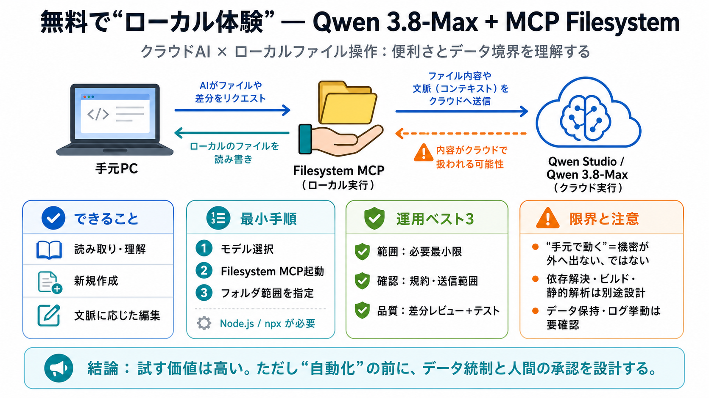

Settings.json Reference - Qwen Code
``` {{ "mcpServers": { "mcpServers": { "filesystem": { "filesystem": { "command": "npx", "command": "npx", "args": ["-y…

Node.js が必要 npx で Filesystem MCP サーバーを起動 args でアクセス範囲（フォルダ）を絞る
``` {{ "mcpServers": { "mcpServers": { "filesystem": { "filesystem": { "command": "npx", "command": "npx", "args": ["-y…
This CVE matters to Qwen3.8 risk analysis because it separates two conditions: 1. The model or agent is influenced by u…
## Citation# bibtex `@misc{qwen38, title = {{Qwen3.8}: A New Bar for Coding and Cowork}, url = { author = {{Q…
Read more Load more Explore cutting-edge model technologies Go to Github Try Qwen Studio Web iOS Android macOS …
`qwen mcp add` The `add` command configures a new MCP server in your `settings.json`. Based on the scope (`-s, --scope`…